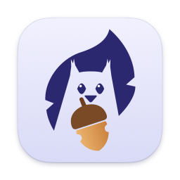

Privacy Policy
Last updated: October 27, 2026
In short: SquirrelProof collects nothing. We, the developer, never receive any of your information (unless you email us), and nothing is shared with or sold to anyone else. Everything stays on your Mac.
What SquirrelProof stores, on your Mac only
- Your settings (shortcuts, default duration, search engine, sound).
- Your lock sessions: when they started and ended, the app or web page you locked into, and what you typed as your intention.
- The thoughts you park during a lock, until you delete them or mark them done (done items are removed after 30 days).
- A count of free trial sessions used, in your Mac's Keychain.
What SquirrelProof never does
- It never sends your information to us, the developer, or to anyone else.
- It has no account and no server, and the app is not allowed to connect to the internet (macOS enforces this, not just our code).
- It doesn't use analytics, advertising or tracking of any kind.
- It doesn't read the contents of other apps or of web pages.
Browser extensions
When you turn on the extension, your browser shows a standard warning. Safari says the extension "can read and alter webpages you visit and see your browsing history on all websites"; Chrome, Arc, Brave and Edge say it can "read your browsing history". Browsers show this for every extension that can see website addresses. Here is what the SquirrelProof extension actually does:
- It collects nothing for us, the developer, and shares nothing with anyone else. Everything stays on your Mac.
- It never runs inside web pages, so it can't see what's on them, like passwords, messages or card numbers.
- It is blocked from the internet: its own settings forbid any network connection, and your browser enforces that. The only thing it talks to is the SquirrelProof app on the same Mac (Safari through its built-in app connection; Chrome, Arc, Brave and Edge over a local connection to 127.0.0.1 that needs a pairing code), and the app is blocked from the internet too.
- It reads only the address and title of your tabs, to keep you on the page you locked.
Purchases
The "Unlock SquirrelProof" purchase is handled by Apple through the App Store. SquirrelProof receives only a confirmation that you own it; it never sees your payment details.
Searching parked items
When you click Search on a parked item, SquirrelProof opens your default browser with the search engine you chose (Google, DuckDuckGo or Bing). From then on, that search engine's own privacy policy applies.
Deleting your data
Delete parked items in the app, or remove SquirrelProof and its folder ~/Library/Group Containers/6HM8CPZ27F.app.blinkers.mac. The trial counter stays in your Keychain ("SquirrelProof trial") so the free sessions aren't reset by reinstalling.
Emailing us
If you write to us (Settings ▸ About ▸ Help & feedback fills in the app and macOS version for you), we receive only what you send. We use it to reply and to improve SquirrelProof, and we never share it.
Contact
Questions about privacy, or anything else: madnomad.apps@proton.me